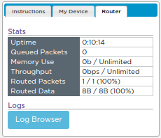
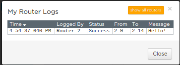
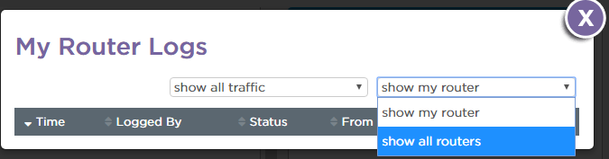

At the end of lesson 2.3, we saw that the Internet uses the Internet Protocol and IP Addresses to communicate across the shared Internet. How is this system similar to how we send letters in the mail? How is it different?
At the end of lesson 2.3, we saw that the Internet uses the Internet Protocol and IP Addresses to communicate across the shared Internet. How is this system similar to how we send letters in the mail? How is it different?
Click here to jump to today’s code.org lesson.
Note: everyone now has an IP address. This will be important in today’s simulation.
Step 1: Open the Log Browser.

Step 2: Look at the messages.

Step 3: View all messages, including other routers.

Use the router logs to choose an IP address from each of the other routers. Send each of those people a message asking who they are and one of the following questions.
Be sure to also respond to questions you get from people on other routers.
Step 1: Open the Log Browser again.
You should see a lot more messages now. Examine them carefully.
Can you predict why some messages are appearing multiple times?
Pick someone on a different router and send three separate messages with your top three favorite movies or TV shows.
What did you notice about the messages you sent in the router logs? Did they always take the same path from your router to the other router?
What did you notice about the messages you sent in the router logs? Did they always take the same path from your router to the other router?

Thinking about these terms, router, redundancy, and fault tolerant, how can we describe what we’ve observed in the router logs at the end of this activity?
What are some practical reasons that you think messages might take different paths from one router to the other?
Thinking about these terms (router, redundancy, and fault tolerant), how can we describe what we've observed in the router logs at the end of this activity? What are some practical reasons that you think messages might take different paths from one router to the other?
Click two cards to test whether they match. Each term has one definition somewhere on the board.
Finish up by answering the two questions on code.org.
Click here to jump to today’s wrap-up questions.